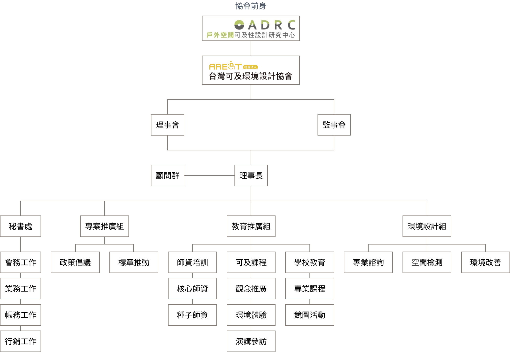

組織架構
推動可及觀念，從理解到行動
AAEDT以清楚的分工與協作為基礎，串連研究、實務、教育與推廣的力量，讓「可及」不只停留在理念，而能一步步落實於真實的生活環境之中。
組織架構圖

| 組織 | 權責 |
|---|---|
| 理事會與監事會 | 理事會為本會最高決策單位，負責協會整體發展方向、重大政策與年度計畫之擬定與審議。監事會依法行使監督職責，確保本會運作之合法性、財務健全與治理透明。 |
| 理事長 | 理事長統籌本會整體運作與跨組溝通，連結理事會決策與各工作單位的實際執行，帶領協會穩健發展，並代表本會對外交流與合作。 |
| 顧問群 | 本會邀集來自環境設計、建築、景觀、教育、社會福利等領域之專家組成顧問群，提供專業諮詢與策略建議，協助協會在政策倡議、研究發展與實務推動上持續精進。 |
| 秘書處 |
秘書處為協會日常運作的核心單位，負責行政與營運支持工作，包括：
|
| 專案推動組 |
專注於制度與政策層面的推動，將可及理念轉化為可實踐的行動與規範，包括：
|
| 教育推廣組 |
以教育與體驗為核心，培育可及觀念與實務能力，推動不同族群對可及環境的理解與參與：
|
| 環境設計組 |
以實務導向回應實際空間需求，提供專業評估與改善建議，涵蓋：
|